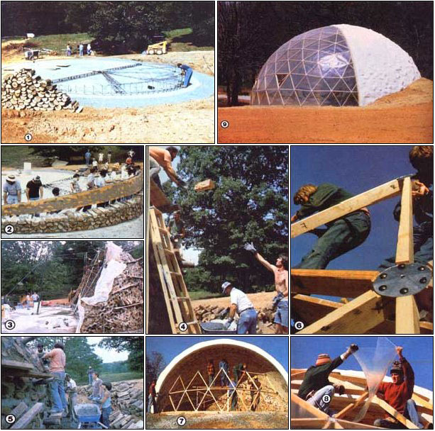

Here's the full story on one of the world's most unusual cordwood structures ...
You may not need an entire 44-foot-diameter, 21-foot-high, geodesic-dome-fronted, wood-wall-backed solar greenhouse like the one that now graces MOTHER's Ecological Research Center ... but-if you're looking for an inexpensive way to construct a solid, well-insulated, dome-shaped structure-the stackwood building method illustrated here is certainly a quick (and easy) one.
In MOTHER NO. 62 (page 33), we told you how-when stackwood expert Jack Henstridge set out to experiment with the low-cost construction technique as a part of last summer's Earth-Sheltered Homes seminar-a whole crowd of folks pitched in, barn raising style, to help create what is (to the best of our knowledge) the world's first stackwood dome.
Needless to say, since our project was a "first", we did a lot of learning as we went along, and there are things that we'll do a little differently when we build our next structure of this type. But we'd still like to tell you how an untested idea (with the help of MOTHER's wonderful summer visitors) became a reality.
Our dome began, of course, with the construction of its 44-foot-diameter foundation. This was built on a gravel base ... and the outer three feet (that area which would actually support the wall) is composed of 18-inch-thick cement strengthened with five half-inch reinforcing rods, while the rest of the floor is only four inches thick and firmed up with wire mesh. (Other dome builders might want to make this layer as much as six inches thick, depending upon the load their structure's foundation will bear.)
While laying that "groundwork", we made our first mistake. The drainpipe that channels rainwater away from the "roof" was dug in around the perimeter of the substructure when- actually- it should have been put on the foundation itself. The runoff created some slight undermining, which caused small cracks to appear later. (The problem isn't very serious, but it definitely is avoidable.)
Our next requirement was some 45 cords of wood. Since we decided to use the green logs we had at hand, the timbers had to be split (which, by the way, made for a very interesting and pleasing design on the inner surface of the building). Again, we later discovered that it would have been better to quarter the logs ... to keep shrinkage-as the wood dried out- to a minimum. (If we had used cured wood, this step would not have been necessary at all for any logs smaller than ten inches in diameter.)
We also cut our timbers to approximately 16 inches in length ... but "approximately" won't be good enough if you want a really smooth surface on your dome ... in such a case, each of the "splits" should be exactly 16 inches long.
Before the log construction began, the base was watered and coated with a thin layer of 1-to-1 cement-and-sand mixture ... to guarantee that the bottom row of wooden "bricks" would adhere properly. Subsequent logs were mortared-at each end-with a mixture of 1 part high-lime-content cement, 4 parts sand, and 1/3 part lime. A sawdust and lime insulation material (consisting of 1 quart of lime to 10 quarts of sawdust) was packed around the unmortared centers as we went along.
The "key" to our unique construction project was the form used to create the dome shape: a curved plywood truss that was four feet high in the center and tapered to a point on either end. The form was anchored (with adjustable bearings) to the diameter of the foundation, and after each layer of logs was laid against it-the plywood "face" was shifted upward so that it slightly overlapped the just-completed section. The supporting framework of the truss was braced with blocks of wood ... then the next layer was begun.
Though we had plenty of muscle power at our disposal-and later a "gin pole" and a couple of come-alongs-to raise the form as the dome grew, the job could be handled easily with the help of half a dozen friends or a single hydraulic jack.
In order to be able to continue work on the wall after it reached head height, "deadmen" -consisting of 36-inch logs were cemented into the structure at points about six feet apart. These were used to hold planks for scaffolding, and were cut off level with the outside of the wall when no longer needed.
Naturally, as the height of the structure grew, it became difficult to pass up buckets of mortar to the workers ... and for a while we resorted to forming the cement into big balls and tossing them up. Later, however, a little motor-driven mason's elevator was used to carry up ten-gallon pails of the adhesive material.
Once our dome passed the 45' angle, the progress slowed noticeably. To help speed things up, another crew (this one using a regular scaffold) began work on the structure from the inside. Then, as the logs were laid at an angle approaching the vertical (somewhere around 6570*), metal plaster lath was worked in between and around the wood to provide extra support.
Finally-the stackwood portion of the structure completed-the form was taken from the work site. All that was left to do on the wooden part of the dome was to face the rough edges with a rebar frame and cement. Then the outside of the quarter sphere was covered with a layer of 1 part cement to 2.5 parts sand ... a coat of Shurwall went over that ... and the surface was further protected with a waterproof Bondex paint job.
The cost breakdown for our huge half shell was- roughly- about $900 for the foundation.. $400 for the form ... and around $2,000 for the lime, sand, cement, paint, and so forth: a total of $3,300.
If we'd wanted to make a complete stackwood dome, of course, we could simply have turned our form around and started working from the opposite side toward the top. But-since we decided to use the unique, south-facing structure as a greenhouse-we completed our building with a translucent, six frequency, geodesic dome ... the construction of which was even less expensive than that of the wooden half. The huge "window" used about $600 worth of 2 X 4's, $120 worth of metal plates, some $80 worth of nuts and bolts, $60 worth of silicone seal, and $300 worth of filon plastic sheeting ... which totals out to $1,160.
Therefore, for less than $4,500 (excluding labor), we now have a super-solid, 1,320-square-foot (and 18,043-cubic-foot) unique solar greenhouse.
What's more, we- and a number of our seminar guests-had a wonderful time building it!
EDITOR'S NOTE: You can read more about Jack Henstridge's cordwood techniques in his article, "We Built a $75,000 House ... forOnly $10,000" in MOTHER NO. 45, page 96 (back issues are avail able for $3.00 each from THE Mother Earth News,`). Two construction guides to the inexpensive building method are Jack's own Building the Cordwood Home ($6.00) and the Northern Housing Committee of the University of Manitoba's Stackwall: How to Build It ($12). Both volumes are available, for the listed prices, from Mother's Bookshelf. Please address all requests for books and back issues to P.O. Box 70, Hendersonville, North Carolina 28791, and include S1.00 shipping and handling for any purchase totaling less than $10. Larger orders are postpaid.
And, for information aboutthis coming summer's seminar program-includingJack Henstridge's cordwood construc tion seminar-turn to page 39 of this magazine.
|
 [1] The frame of the plywood form is assembled on the concrete foundation, while a pile of cordwood awaits willing hands. [2] Eager seminar attendees lift the truss to a new position as the rear wall of the dome begins to take shape. [3] ""Deadmen "" bristle like porcupine quills on the outside of the structure. They'll be sawed off when they're no longer needed.[4] Two of the volunteer workers invented this ""airmail ""system. [5] Twelve-year-old John Carney did a man's job. [6] The geodesic framework is assembled ... [7] rises to meet the cordwood, and ... [8] is glazed. [9] Cheers! MOM's greenhouse dome is done! |
|
|